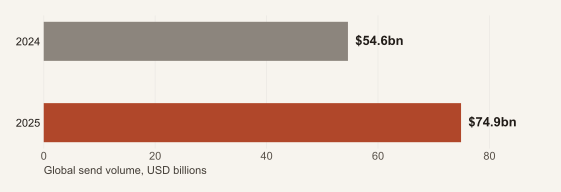
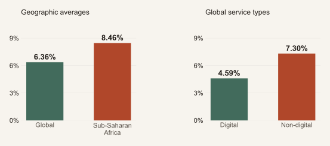
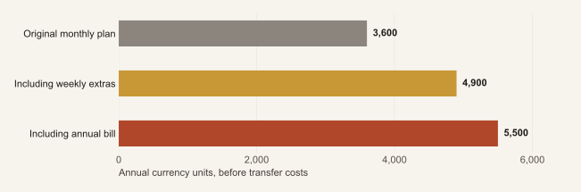
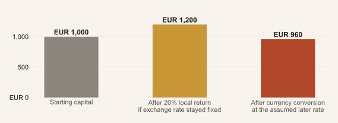
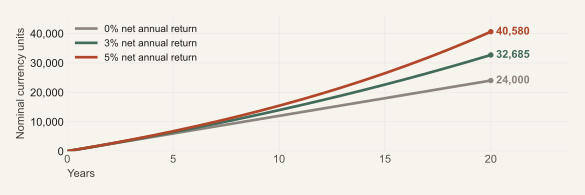

Remittance Apps
and Black Tax
Supporting family while building financial security. How apps can reinforce financial obligations, what the evidence actually shows, and practical ways to protect both the sender and the people relying on them.
START HERE
The two-minute summary
Remittance apps have made it easier to care for people across borders. They can also make repeated financial support easier to sustain beyond a sender's means. The important question is whether both households become more secure, not simply whether more money moves.
What the evidence supports. Providers market family connection, reduce the effort of sending and, in some cases, enable recurring transfers. Research outside Africa shows that prices and the framing of remittances can change behaviour. This does not establish that apps cause harmful black tax across Africa. [3][4][7][9]
What families can do. Agree an affordable support amount, a review date and a plan for genuine emergencies. Protect essential needs in both households. Separate routine support from savings, skills funding and investments with clearly named owners.
Where investing fits. Keep near-term needs accessible. Consider regulated savings and suitable short-term securities for planned spending; pensions and diversified investments for longer horizons; and carefully tested businesses or property where the work, costs and ownership are clear. No single product suits every family.
The overlooked risk. Sending everything today while saving nothing for retirement can leave the next generation facing the same obligations. Financial security for the sender is part of a sustainable family-support system.
The bigger opportunity. Apps could help people budget, coordinate and build reserves, as well as transfer. Governments still have responsibility for functioning health, education, employment and social-protection systems.
This report gives comparable country guides for Egypt, Ghana, Kenya, Morocco, Nigeria, Senegal and South Africa. Investment routes are examples to investigate, not product endorsements or personalised financial advice.
Explore the charts · Download chart data (CSV)
Section 01What we mean by black tax
For this report, black tax means the financial obligations that a relatively better-resourced person carries for relatives or a wider community, especially when those obligations constrain their own security. It is a social expression, not a government tax. Some families prefer to call it solidarity, reciprocity or shared responsibility. Those differences matter.
A South African study based on 118 questionnaire responses and six interviews found recurring transfers, including support for everyday expenses and education. Its small sample cannot describe every African household, still less establish the effect of a remittance app. It does show why the subject must be understood through relationships as well as amounts. [1]
For many migrants, support repays sacrifices that made migration possible. A sibling may have provided care, a parent may have funded school, or relatives may have raised children during years abroad. An accounting system that records only the migrant's money misses these contributions.
The problem is an obligation without a workable limit
There is a meaningful difference between an affordable commitment agreed together and an open-ended expectation that every request must be met. Pressure can exist alongside love. A sender may appear wealthy when earnings are converted into the home currency while facing high rent, debt, childcare or insecure employment abroad.
The phrase should not be applied as though it describes all Black people, all Africans or only African families. Similar obligations exist elsewhere. Here it is used to investigate the tension between solidarity and financial strain, without turning relatives into a problem to be eliminated.
Support already creates value
Food prevents hunger. Medical care can preserve earning capacity. School fees can expand future choices. These outcomes matter even when no financial asset appears in the sender's name. IFAD reports USD 728.6 billion in remittances to all low- and middle-income countries in 2025, describing their role in meeting needs and strengthening resilience. That is a global figure, not an African total. [28]
The report's test is therefore two-sided: can the recipient rely on essential support, and can the sender remain financially resilient?
Reading route: sections 2-5 examine apps and costs; 6-7 set out the family plan; 8-13 cover investments and countries; 14-18 cover returns, safeguards and action. Sources and calculation notes close the report.
Section 02How apps can reinforce expectations
The examples below come from public documentation checked on 5 October 2026. They are not a ranking, an in-app audit or an accusation that a named provider coerces its users. Features and marketing vary by market.
| Observed example | Useful purpose | Possible pressure channel |
|---|---|---|
| Sendwave uses the phrase “Send money with love” and promotes fast phone transfers. [3] | Makes cross-border care convenient and emotionally recognisable. | A sender may associate sending with being a good relative. The page itself does not prove guilt or harmful spending. |
| Wise describes one-off and recurring schedules, including end dates. [4] | Predictable payments can help families budget. | A commitment may continue after circumstances change. The end-date feature also offers a practical safeguard. |
| Remitly's annual report describes transaction-fee and foreign-exchange-spread revenue. [5] | A commercial service funds delivery, compliance and support. | Growth in transactions can benefit the provider without revealing whether the sender is saving enough. |
Five mechanisms worth watching
Less effort per transfer. Removing queues and paperwork is valuable. It also removes a natural pause in which a person might reconsider a non-urgent request. This is a plausible mechanism, not a measured African effect.
Small amounts hide the total. Each request can seem manageable while the combined monthly or annual commitment is large. The app sees transfers; the household needs a view of all commitments across providers and cash.
Speed becomes an expectation. When sending is technically immediate, taking time to review a request may be interpreted as unwillingness. The social expectation, not the technology alone, creates the pressure.
A temporary increase becomes a new baseline. A bonus, promotion or emergency payment can reset expectations unless its purpose and end date are explicit. The family may reasonably plan around what appears to be continuing income.
The goal disappears behind the transaction. Completing a payment is not the same outcome as finishing a qualification, reducing debt or making a family less vulnerable to the next emergency.
Section 03What we can and cannot prove
There is evidence that remittance design changes behaviour. There is not enough evidence in this review to estimate how much African black tax is caused by apps.
In a randomised experiment involving Salvadoran and Guatemalan migrants, temporary fee discounts lasted 10 weeks. Transfers increased, and the effect persisted for up to 20 weeks after the discounts expired. This is causal evidence about that intervention and setting. It does not show that the extra support was harmful, nor that today's African app users would respond identically. [7]
A separate experiment involving Filipino migrants in Rome found that labeling money for education raised experimental remittance amounts by more than 15%. Adding direct school payment produced little additional increase. This suggests that a shared purpose can matter without maximum sender control. [8]
A later evaluation involving 4,458 Filipino migrants in the UAE found different responses: labeling increased remittances among people with lower baseline activity, while those already remitting more did not change their behaviour. One result should not become a universal rule. [9]
Figure 1. A growing payments business


Remitly reported global send volume of USD 74.9 billion in 2025, up from USD 54.6 billion in 2024. Revenue was approximately USD 1.6 billion in 2025. These figures demonstrate commercial scale; they do not measure African family obligations or prove that growth came from financially stretched senders. [6]
A provider's growth metric and a family's success metric answer different questions. Families need measures of security, debt and progress alongside transaction totals.
Section 04Cheaper transfers are still a good thing
It would be a mistake to respond to pressure by defending expensive transfers. The World Bank's Q3 2025 data put the average cost of sending USD 200 at 6.36% globally and 8.46% to sub-Saharan Africa. Digital services averaged 4.59% globally, compared with 7.30% for non-digital services. These are dated averages across different samples, not live quotes or a causal estimate of switching apps. [2]
Figure 2. Digital delivery can reduce the price of support


Compare the complete journey
For an actual transfer, compare how much the recipient can use after the exchange rate, sender fee and any receiving or cash-out charges. Compare the same amount, destination, funding method and delivery method at the same time. Speed, reliability and access also matter.
An introductory offer is a one-off saving. Review the ordinary price before setting up a recurring arrangement. “No transfer fee” does not establish that the exchange rate or the complete transaction is cheapest.
Decide who benefits from the saving
Suppose a hypothetical transfer costs 8 units through one service and 3 through another. The 5 saved can strengthen the sender's reserve, raise the recipient's usable support, or be shared. Agree the allocation deliberately. A lower fee need not automatically become a larger permanent commitment.
The strongest outcome combines cheaper delivery with a sustainable plan for the money. Families should not have to choose between those two benefits.
Section 05The cost of commitments
A household can become excellent at comparing transfer fees while remaining unaware of the total it has promised. The most useful annual statement may therefore combine bank transfers, app transfers, travel cash, direct bill payments and purchases for relatives.
Figure 3. Small additions can change the annual commitment


In this illustration, 300 currency units a month becomes 3,600 a year. Adding 25 every week adds 1,300; a separate 600 annual bill takes the total to 5,500. The additional commitments are 53% of the original annual plan. None of these requests is necessarily unreasonable. The total simply needs to be visible.
Count time and uncertainty too
Managing a remote building project or small business can add unpaid work to a migrant's second shift of family administration. A contribution that looks like an investment may require continuing supervision, replacement equipment or emergency top-ups.
Track predictable annual costs before calling them emergencies: school terms, insurance renewals, repairs and seasonal obligations can be planned even when the exact amount changes. Keep a separate reserve for genuinely unexpected needs.
The commitment should survive a bad month
A promise based on overtime may fail when shifts disappear. A promise based on a bonus should have an end date. Before increasing regular support, test a lower-income month and a temporary job loss. If the only way to keep the promise is expensive borrowing, revisit the amount and the alternatives together.
A successful transfer is a payment that arrives. A sustainable commitment is one the household can honour without steadily undermining its future.
Section 06Start with a support budget
The most useful starting point is the sender's actual capacity after taxes and unavoidable costs, considered alongside the recipient's essential needs. There is no defensible universal rule that every migrant should remit 10%, 20% or any other fixed share.
Available capacity = take-home income - essential living costs - required debt payments - provision for the sender's resilience and future.
This is a planning framework, not permission to abandon a dependent person. Where needs exceed capacity, the next step is to share the shortfall honestly, seek other contributors and investigate services or assistance, rather than conceal it through debt.
| Illustrative monthly budget | Currency units | Purpose |
|---|---|---|
| Take-home income | 3,000 | Income after tax; additional saving below excludes anything already deducted. |
| Essential costs and required debt payments | 2,000 | Housing, food, transport, dependants and contractual payments. |
| Sender emergency reserve contribution | 200 | Buffer for disruption; target depends on employment and obligations. |
| Additional retirement or long-term saving | 300 | Future provision beyond any amount already deducted from pay. |
| Agreed routine family support | 400 | A predictable commitment reviewed together. |
| Shared emergency or opportunity reserve | 100 | Agreed use; unspent money stays in the reserve. |
This example allocates the full 3,000. It is not a recommended salary, an African average or a universal allocation. If income falls to 2,700 and the other planned amounts stay unchanged, there is a 300 shortfall. Discuss which flexible items can change; do not treat the original promise as automatically affordable.
Protect the person who keeps the system working
The sender's transport to work, health, legal ability to remain employed and emergency liquidity support the whole arrangement. A resilient sender can be a more reliable source of help than a generous sender approaching a financial crisis.
Plan retirement explicitly, whether or not you have children. If present support consumes every future provision, today's solution can become tomorrow's obligation for younger relatives.
Section 07Agree the purpose and respect autonomy
Discuss four purposes separately. The amounts can change; the distinction should remain clear. There is no evidence-based reason to impose the same split on every family.
Essentials. Agree predictable support for necessities, with a date and a review point. Give recipients room to manage daily spending. An adult should not have to account for every small purchase to be treated with dignity.
Resilience. Build an accessible emergency reserve and investigate suitable insurance or public provision. Cover, exclusions and claims handling matter more than the label. Insurance transfers some risks; it does not replace cash for every surprise.
Opportunity. Fund a qualification, job-search costs, childcare that enables work, reliable tools or a tested business improvement. Choose a specific outcome and a way to assess progress. Do not require every relative to become an entrepreneur.
Ownership. Where money buys an asset, decide whose asset it is and who bears the loss. A gift that helps a sister buy equipment can strengthen her independence without giving the sender a claim on her business.
Control is not the same as a good outcome
Research with Salvadoran transnational households found that products offering migrants more control could raise savings at the partner bank. The authors also caution that sender control does not automatically establish greater welfare for the household at home. Financial planning should therefore be negotiated, not imposed through surveillance. [10]
Direct bill payment can be useful when both sides prefer it. It should not become a blanket assumption that recipients are incapable of managing money. Formal labels also do not create money: an “education” transfer might free other household funds for food, which can be entirely sensible.
A family agreement in plain language
“I can commit to this amount until this review date. Here is what it is intended to cover. We will discuss exceptional needs separately. This reserve belongs to this person, and these are the rules for using it. If my income or your needs change, we will revisit the plan.”
Include other contributors where appropriate, recognising care work as well as cash. A person providing daily care may already be contributing heavily. Equality does not always mean identical payments.
The aim is predictable support and more choices, not a financial contract that removes compassion.
Section 08Match the investment to the need
Investing comes after deciding when the money is needed, in which currency, by whom and for what purpose. Time horizon and the ability to bear loss matter more than a striking advertised yield. Diversification can reduce concentration risk but cannot remove investment losses. [11]
| Option | Where it may fit | What to check |
|---|---|---|
| Regulated bank savings or deposits | Emergency cash and near-term spending, subject to access terms. | Deposit-protection eligibility and limits, currency, fees, early-withdrawal restrictions and access from abroad. |
| Regulated money-market or short-duration funds | Planned spending where the fund's liquidity and risks are acceptable. | Holdings, manager, custodian, redemption time, fees and credit exposure. A fund is not automatically an insured bank deposit. |
| Treasury bills or suitable government bonds | A known future payment when maturity and currency match the need. | Sovereign risk, purchase price, tax, auction terms and loss or delay if sold early. “Government” does not mean risk-free. |
| Pension or retirement account | Long-term retirement provision where the investor is eligible. | Employer contributions, charges, access age, portability, beneficiaries and cross-border tax treatment. |
Build accessible reserves before locking everything away
Emergency savings reduce the need to sell investments under pressure or borrow at an expensive rate. Choose a reserve size around actual risks: insecure work, dependants in two countries and unpredictable relocation costs may justify a different buffer from a stable household's. [12]
For predictable school fees, an investment that becomes accessible after the bill is due has failed its purpose even if it earns a high return. Use a calendar of needs and maturities, allowing for processing delays.
Check benefits where you work
An investment does not have to be located in Africa to support an African family. Workplace pensions may include employer contributions; UK MoneyHelper describes this in the UK system. Other destination countries have different arrangements and eligibility rules. Investigate the benefit before giving it up, while recognising that locked retirement money cannot pay next month's emergency. [27]
Section 09Growth needs time and ownership
For money that can remain invested for years, the choice broadens. The important distinction is between an asset that can serve a long-term plan and money that may be demanded at short notice. The following are categories to investigate, not a recommended portfolio.
| Option | Potential contribution | Principal limitation |
|---|---|---|
| Diversified equity funds or ETFs | Exposure to many businesses and long-term growth potential. | Large temporary or permanent losses are possible; costs, tax domicile and eligibility matter. A narrow fund may not be diversified. |
| A family or independent business | Employment, local income and ownership that may reduce reliance on transfers. | Demand, execution, governance and working-capital risk. Revenue is not profit; unpaid family labour is not free. |
| Property or productive equipment | Rental income, reduced household costs or stronger earning capacity. | Title, maintenance, vacancy, management and illiquidity. A family home and a rental investment serve different purposes. |
| Education, skills and enabling services | Better ability to earn, access work or remain economically active. | No guaranteed job or wage increase; value may accrue to the recipient rather than the payer. |
Test the economics before increasing the commitment
A business with sales of 1,000 units and costs of 700 appears to generate 300. If replacing the operator's unpaid work costs another 250, only 50 remains before any omitted tax or reinvestment. Ask whether a business can pay its worker and still support the intended household.
For property, calculate income after vacancy, maintenance, management, insurance, taxes and finance costs. If the building houses relatives rent-free, evaluate it as housing support and possible capital value, not as current cash income.
For a course or tool, ask what barrier it removes: a recognised credential, unreliable equipment, transport to interviews or childcare. A small, well-chosen expense may achieve more than funding a business that the recipient neither wants nor can operate.
Avoid dependence on one person and one market
A job abroad, family spending at home and an investment portfolio already expose the household to different risks. Adding every available unit to one property, one relative's enterprise or one country's assets can concentrate them again. Spread exposure where practical; do not mistake several products holding the same underlying debt for genuine diversification.
Section 10Egypt and Morocco
These country guides use the same questions: route, purpose, access and main caution. They are comparable examples, not a ranking of markets or an assumption that all citizens abroad qualify for every product.
Egypt
Routes to investigate. Bank savings, deposits or savings certificates; and investment funds accessed through appropriately licensed institutions. Banque Misr's 2025 announcement describes an account-opening initiative for Egyptians abroad through selected embassies and consulates. The FRA provides guidance on licensed brokers and fund managers. [25][26]
Possible role. An accessible balance may support near-term Egyptian-pound expenses. A term product may fit a later known payment if its maturity and redemption terms match. A fund requires a separate assessment of what it owns and how it can be sold.
Access and ownership. Confirm whether your country of residence participates in the banking initiative, the current identity and tax-residency documents, funding channels, account title and remote withdrawal process. An announcement does not guarantee that a particular application can be completed abroad.
Main caution. Compare inflation and currency exposure with the intended spending goal. A high Egyptian-pound interest rate is not the same thing as a high return in euros, dollars or pounds sterling. Read early-redemption conditions before committing money needed for family bills.
Morocco
Routes to investigate. Bank savings appropriate to residence status, and AMMC-regulated collective investment funds known as OPCVM. Fund categories differ in assets and risk; review the information document instead of choosing by the fund's name. [21]
Possible role. Cash or an appropriately liquid product can serve dirham expenses; longer-term funds require the ability to tolerate their underlying risks. Select the currency around where the money will ultimately be spent.
Access and ownership. The 2026 foreign-exchange instructions include Moroccans residing abroad within the foreign-investment framework. Transfer rights depend on qualifying funding and the relevant conditions. Preserve bank evidence of foreign-currency funding and establish the exit procedure before investing. [22]
Main caution. Do not assume that every dirham asset can be converted and transferred abroad in the same way. Ask the bank to document the treatment of the specific account, investment and source of funds. Legal transfer rights and the market value of the investment are separate questions.
Section 11Ghana and Nigeria
Ghana
Routes to investigate. SEC-listed mutual funds or unit-trust structures, and government securities through an eligible regulated intermediary. The SEC mutual-fund register identifies managers and custodians/trustees. Bank of Ghana materials identify the authorised primary-dealer route for wholesale Treasury-bill auctions. [17][18]
Possible role. A suitably liquid cedi product may serve planned local expenses; a longer maturity may serve a later goal. Match the underlying holdings and dealing terms to the family calendar rather than treating every “income” product as immediately accessible cash.
Access and ownership. Confirm the exact fund, manager and custodian, then ask how non-resident clients open, fund and withdraw from an account. Establish whose name appears on the holdings and whether money can be paid back to an account abroad. Eligibility can differ by instrument and investor status.
Main caution. A regulated fund remains exposed to its assets. Check concentration in government or corporate debt, any redemption constraints and the difference between a quoted historical yield and future income. Cedi returns should be assessed in the currency of the intended spending; an attractive local yield alone is insufficient.
Nigeria
Routes to investigate. FGN Savings Bonds and suitable regulated funds. The DMO portal describes a NGN 5,000 minimum for its Savings Bond, two- and three-year issues, quarterly coupons and a CSCS account requirement. This retail product should not be confused with other bond offerings. [15]
Possible role. A bond may fit a future naira obligation if maturity and payment timing suit it. An appropriately liquid fund may serve a different purpose, but its portfolio and redemption terms need checking separately.
Access and ownership. Confirm the current offer and diaspora onboarding requirements with the DMO route or an authorised distribution agent. Use the SEC register to verify an intermediary's exact legal name and authorised activity. A familiar app name is not a substitute for that check. [16]
Main caution. Quarterly coupons do not make the full principal available each quarter. Selling before maturity can involve price and liquidity risk. Naira exposure, inflation, tax residence and transfer-out arrangements need assessment. An old advertisement for a dollar-denominated issue is not evidence that the same offer remains open today.
Section 12Kenya and South Africa
Kenya
Routes to investigate. Government securities through DhowCSD or an eligible intermediary, and CMA-approved collective investment schemes. These are different structures: directly holding a security is not the same as owning units in a fund that holds securities. [13][14]
Possible role. Suitable short-term instruments can serve planned shilling expenses; longer maturities need a longer horizon. A money-market fund can be considered only after checking its underlying risks, charges and redemption arrangements.
Access and ownership. The DhowCSD FAQ lists identity documentation, tax identification or applicable exemption and a Kenyan commercial-bank account among its requirements. Check the route for your citizenship and residence status. Use the current auction notice for minimums and terms, and the CMA register for the exact fund and manager.
Main caution. Shilling income may fit school fees or other local costs but does not guarantee purchasing power for retirement abroad. Fund approval is not a guarantee against loss or delayed access. A relative's ability to log into an account does not establish legal ownership or authority to manage it.
South Africa
Routes to investigate. RSA Retail Savings Bonds for eligible investors, and regulated collective investment schemes or retirement products where suitable. National Treasury's eligibility information specifies citizens or permanent residents with a valid South African identity number and a South African bank account. [19]
Possible role. Choose between accessible savings, a term investment and retirement provision according to when the money is needed. The label “retail bond” does not mean every product has identical withdrawal rights or interest behaviour.
Access and ownership. Confirm residence-related servicing requirements, source-of-funds documentation and the appropriate account structure. The FSCA provides information and registers for regulated institutions and collective investment schemes. Verify the activity for which an adviser or provider is authorised. [20]
Main caution. Citizenship, tax residence and product eligibility are different concepts. A benefit described as tax-advantaged in South Africa may not receive the same treatment where you live. Check current product rules, any contribution restrictions, currency exposure and early-access conditions before treating the investment as a family emergency fund.
Section 13Senegal and choosing across borders
Senegal
Routes to investigate. Government securities in the West African Economic and Monetary Union (UEMOA), through an approved bank or regional brokerage firm (SGI); and investments on the regional stock exchange, BRVM. UMOA-Titres describes the securities-account route; BRVM explains that SGIs trade its listed securities. [23][24]
Possible role. A suitable short-term security may help plan CFA-franc expenses. Equities or longer-term debt need a horizon and risk capacity appropriate to those assets. A regional market offers more choices, but regional exposure is not the same as global diversification.
Access and ownership. Ask the intermediary about non-resident identification, account opening, current issue terms, all charges and the process for receiving proceeds abroad. Distinguish an auction purchase from a listed security bought in the secondary market. Record the owner and the institution holding the assets.
Main caution. The security's currency does not remove the issuer's repayment risk, and a quoted market price does not guarantee an immediate buyer. Use an issue's current documents rather than an expired announcement. Money needed for imminent family spending should not depend on a hurried sale in a thin market.
Seven countries, one disciplined comparison
Country familiarity is useful, but it is not due diligence. Across all seven guides, ask the same questions before funding an investment:
- Who owns it? Sender, recipient, jointly held account or a legally constituted business?
- When can we use it? Include notice periods, maturity dates, settlement time and withdrawal penalties.
- What can we lose? Include investment, currency, inflation, credit and operational risks.
- What remains after costs? Include both directions of currency conversion, custody, management, tax and administration.
- Who regulates this activity? Verify the actual entity, product and custodian, using contact details found independently.
The country where an asset is located and the country where the investor lives both matter. If retirement will be abroad and family bills are at home, different portions of the plan may sensibly use different currencies and institutions.
These seven examples are not a complete map of Africa. Other countries need their own checks; a rule in one regional member or neighbouring country should not be assumed to apply automatically elsewhere.
Section 14A high local return can mislead
An investment's useful return depends on the currency in which it will be spent. The following is a calculation, not a prediction for any African currency.
Figure 4. A local gain can become a loss abroad


Start with EUR 1,000. At 100 local units per euro, it buys 100,000 local units. A 20% investment return produces 120,000. If the later exchange rate is 125 local units per euro, converting back produces EUR 960: a 4% loss before fees and taxes.
The number of local units needed to buy one euro rose by 25%; equivalently, the euro value of one local unit fell by 20%. Keeping that distinction clear avoids a common percentage error.
Match the currency to the obligation
If the money is intended for local spending, the relevant comparison also includes changes in local prices. If it is intended for retirement abroad, the foreign-currency outcome matters. Neither perspective is automatically correct for every goal.
A dollar-denominated asset can remove one currency mismatch while leaving credit, liquidity and legal risks intact. A family's spending may also change currency if someone migrates, returns home or chooses a different university.
Ask which amount has been promised
Promising to send EUR 300 each month fixes the sender's budget but allows the recipient's local amount to change. Promising a fixed local-currency amount makes the recipient's budget steadier while shifting exchange-rate variability to the sender. Agree which risk each person can bear and when to review it.
Both currency directions and both households belong in the plan. A number that looks impressive in an advertisement is not yet a complete investment case.
Section 15Build capital without promising miracles
Small regular contributions can become meaningful capital. This illustration invests 100 currency units at each month-end for 20 years. The assumed net returns are hypothetical; real investments do not deliver smooth guaranteed returns.
Figure 5. Contributions and time both matter


At zero return, the contributions total 24,000. At a hypothetical 3% annual net return they reach about 32,685; at 5%, about 40,580. These are nominal amounts: inflation reduces purchasing power. The illustration assumes returns after fees and taxes, no withdrawals and monthly compounding at the equivalent rate. It is not an expected-return forecast.
Income requires more capital than a slogan suggests
To fund 300 units a month entirely from a constant net cash yield requires 3,600 units a year. The simple capital calculation is annual spending divided by yield:
| Hypothetical net cash yield | Capital required | What the arithmetic leaves out |
|---|---|---|
| 3% | 120,000 | Inflation, variable income and capital loss. |
| 5% | 72,000 | A constant net yield is not guaranteed. |
| 8% | 45,000 | Higher promised yield can involve greater risk. |
This is not a safe-withdrawal rule, a recommended yield or a promise to preserve purchasing power. It assumes all cash income is spent. Many households will combine earnings, savings and support rather than live on investment income alone.
Do not turn the wish to reduce family pressure into a reason to buy an investment you do not understand. A realistic first success may be a funded school term, a small emergency reserve or one less expensive debt.
Section 16Make the arrangement legally usable
An app can move money without resolving who owns an investment, who may withdraw it or what happens if somebody dies. Those questions should be answered before the family needs the money urgently.
Distinguish a gift, a loan and an investment
Gift: the recipient owns the money. Expectations about gratitude do not automatically create a repayment right.
Loan: agree the amount, repayment terms, what happens if circumstances change and whether the arrangement is legally and practically enforceable.
Investment: specify ownership, decision rights, compensation for work, distributions and an exit process. Informal assurances are a weak foundation for a family business with multiple contributors.
Use local professional help where the amount or complexity warrants it. Cross-border tax, inheritance, marital-property and reporting rules depend on the people and countries involved; there is no single African diaspora rule.
Test the complete route before scaling up
Verify an institution through the regulator's own directory and contact it through independently obtained details. Check the legal account name and custody arrangement. Make a small initial transaction and test a permitted withdrawal. A successful small withdrawal is useful operational evidence, not proof that an investment is safe.
Retain statements, funding records, ownership documents and instructions for legitimate emergency access. Use strong account security. Access to a phone, SIM or password is different from authority to inherit or manage the underlying asset.
Fraud can borrow the language of family and community
A referral from a trusted relative does not establish that an offer is regulated or viable. Be sceptical of guaranteed high returns, unexplained strategies, urgent payment demands and requests to pay into unrelated personal accounts. Confirm unusual emergency requests through another established channel, especially where account details suddenly change.
Protect the household from a forced sale
An illiquid plot, unfinished building or relative's business cannot always pay an urgent bill. Keep sufficient accessible resources outside long-term projects. Diversification includes having more than one way to obtain money when something goes wrong, not merely owning several assets on paper.
Section 17What better apps and policy could do
The commercial opportunity need not be limited to increasing transfers. A provider could compete on helping families achieve an agreed outcome while keeping customers financially secure. The following are AGF proposals, not claims that all these functions currently exist.
Product features worth building
A complete annual view. Show total amounts, costs and recurring commitments, with voluntary ways to include other providers. Give the user a usable export rather than making financial clarity depend on staying in one app.
Sender-controlled limits and review dates. Let customers set alerts, pause non-urgent reminders and review continuing commitments. Clearly explain currency variability. An easy cancellation or end-date setting is as important as an easy setup.
Separate support from saving. Offer optional goals for emergencies, education or the sender's future, with clear ownership and access. Do not automatically invest money intended for essentials, or make a high-risk product the default destination for a remittance.
Transparent incentives. Separate transfer pricing from investment commissions. Explain whether a recommendation earns the provider a fee and whether the investment is actually suitable for short-term spending.
Family coordination with consent. Shared goals can help several relatives contribute without exposing each person's entire financial life. Allow recipients to communicate needs and propose changes; do not make them subjects of continuous monitoring.
Measure more than money moved
Potential measures include user-selected goals completed, emergency-buffer progress, reduced missed payments and customer control over marketing. Evaluate both sender and recipient outcomes. More transfers may reflect prosperity, a crisis, lower prices or pressure; volume alone cannot distinguish them.
Public policy cannot be outsourced to migrants
Governments and regulators can improve competition and price transparency, enforce accurate financial promotions, strengthen fraud redress and make lawful investment access easier. But functioning health, education, pensions and employment systems remain essential. Family remittances cannot fairly be expected to replace every missing public service.
A diaspora organisation could pilot voluntary budgeting sessions and independent investment education. If AGF develops such a programme, it should disclose funding and referral relationships and evaluate household outcomes before claiming success.
Section 18A practical ninety-day plan
Days 1-30: make the whole picture visible
Combine the last twelve months of transfers and direct family spending. Distinguish regular support, predictable annual bills and genuine emergencies. Record take-home income, debt, essential costs, accessible savings and existing pensions. Ask recipients what has helped most and which needs remain unmet.
Agree an initial support amount and review date. Where the current commitment is unaffordable, explain the shortfall and plan the change together; avoid abrupt reductions that leave dependants without essentials.
Days 31-60: organise the money around its purpose
Compare the full transfer cost for the actual corridor. Set aside predictable annual bills in an appropriate accessible place. Agree emergency procedures, other contributors and where public services or insurance may help.
Choose one manageable future-building goal. That might be additional retirement saving, a recipient's qualification or a small business improvement with clear demand. Do not start several complex projects simply because small transfers make them feel affordable.
Days 61-90: verify, start small and review
For an investment, verify the provider and product, name the owner, check all costs and exit terms, and confirm the cross-border tax questions. Start only with an amount appropriate to the risk and household budget. Review the experience with the people affected.
| Household dashboard | Question to ask at each review |
|---|---|
| Essential support | Were agreed necessities funded reliably? |
| Sender resilience | Are accessible reserves improving, or is debt increasing? |
| Recipient choices | Has the support improved security, skills or earning capacity? |
| Ownership and access | Do records show who owns assets and how they can be used? |
| Future provision | Is there progress towards retirement and other long-term goals? |
| Relationship quality | Are both sides able to discuss a change without shame or surprise? |
The best remittance plan does more than make sending easier. It helps people care for one another without making permanent financial insecurity the price of belonging.
Research and calculation notes
Scope and evidence standard
This report is a desk-based synthesis prepared for Africa Global Forum on 5 October 2026. It reviews original research, official statistics, public provider documentation and regulator or government information. It does not contain a new household survey, mystery-shopping exercise, app telemetry analysis or personalised investment assessment.
The seven countries were chosen to cover different regions, currencies and investment systems with comparable treatment. They are not statistically representative of Africa, and the report does not rank their people, markets or cultures. Anglophone and Francophone sources were used; the availability of public documentation still limits coverage.
Claims about observed provider wording and features are distinguished from proposed behavioural mechanisms. Experimental research outside Africa informs questions and design possibilities; its effect sizes are not projected onto African users. No causal estimate of app-induced black tax is offered.
Commercial and regulatory pages establish described routes and requirements, not independently verified investment quality. Eligibility, rates and rules can change. The guides omit live yield rankings and universal tax claims. Confirm product documents and relevant professional advice before committing material capital.
Figures and arithmetic
Figure 1: Remitly's reported global send volume, USD billions, 2024 and 2025. Not remittance-market share or an African household series. Source [6].
Figure 2: World Bank average cost percentages for USD 200, Q3 2025. Geographic comparisons and global service-type comparisons appear in separate panels because they are overlapping, differently composed samples. Source [2].
Figure 3: 300 x 12 = 3,600; 25 x 52 = 1,300; plus 600 = 5,500. The increase is 1,900 / 3,600 = 52.8%. All values are hypothetical currency units; transfer costs are excluded.
Figure 4: 1,000 x 100 x 1.20 / 125 = EUR 960. Return is 960 / 1,000 - 1 = -4%. No fees or taxes; exchange rates and investment return are assumptions.
Figure 5: Month-end deposits of 100 for 240 months. For annual effective net return r, monthly rate i = (1 + r)^(1/12) - 1. Future value = 100 x ((1 + i)^240 - 1) / i; at zero return, use 24,000. No withdrawals, inflation adjustment or variable returns.
Income illustration: Required capital = 3,600 / assumed net cash yield. This does not model sustainable withdrawals, inflation protection or investment loss. All frameworks and household scenarios are original analytical illustrations, not measured household averages.
Sources and evidence notes
- Development Southern Africa. Black Tax: Understanding the financial transfers of the emerging black middle class
2018. Publisher abstract; questionnaire of 118 people and six interviews in South Africa. Not a representative African diaspora survey or an app-impact study. - World Bank. Remittance Prices Worldwide, Issue 54
Q3 2025 observations, accessed October 2026. Average cost of sending USD 200. Regional and service-type samples differ; these are not current individual quotes. - Sendwave. International money transfer homepage
Public marketing checked 5 October 2026. Documents love/family framing and speed claims; neither a service test nor evidence of psychological harm. - Wise. What are scheduled transfers?
Help documentation checked 5 October 2026. Describes frequency, end dates and execution-time exchange rates. Availability depends on account and currency. - Remitly. 2025 Annual Report
Company filing for 2025. Explains transaction fees and foreign-exchange spreads. Establishes business incentives, not abusive intent. - Remitly. Fourth quarter and full year 2025 results
18 February 2026. Global company-reported send volume and revenue; not African remittances, family-support expenditure or household outcomes. - Ambler, Aycinena and Yang. Remittance Responses to Temporary Discounts
September 2014 research paper. Randomised 10-week fee discounts for Salvadoran and Guatemalan migrants. Persistence observed up to 20 weeks after expiry; not a study of African app users. - J-PAL. Testing Commitment Devices for Remittances among Filipino Migrants in Rome
Research summary of a lab-in-the-field experiment and product take-up. The over-15% labeling result concerns experimental remittance choices, not an Africa-wide effect. - Innovations for Poverty Action. The Impacts of Labeling Remittances on Migrants and Their Households in the Philippines
2018-2020 evaluation: 4,458 Filipino migrants in the UAE and 2,075 recipient households. Responses differed by baseline remittance activity. - Ashraf, Aycinena, Martinez and Yang. Savings in Transnational Households: A Field Experiment
Study of Salvadoran transnational households. More migrant control raised savings at the partner bank; authors caution against assuming that control necessarily improves household welfare. - US Securities and Exchange Commission. Beginners guide to asset allocation, diversification and rebalancing
General principles on horizon, risk and diversification. US source; does not establish local eligibility or tax treatment for African or diaspora investors. - US Securities and Exchange Commission. Save for a rainy day
Emergency-savings guidance. Deposit protection and account eligibility must be checked in the actual jurisdiction; no US coverage rule is generalised here. - Central Bank of Kenya. DhowCSD frequently asked questions
December 2025. Account-opening requirements and government-securities access. Auction notices control product-specific minimums and terms. - Capital Markets Authority Kenya. Licensees and approved schemes
Live regulatory directory checked 5 October 2026. Verify the exact legal entity and scheme; registration does not guarantee returns. - Debt Management Office Nigeria. FGN Savings Bond subscription portal questions
Checked 5 October 2026. NGN 5,000 minimum, two- and three-year offerings, CSCS account and quarterly coupons. Incomplete tax answers on the portal were not relied upon. - Securities and Exchange Commission Nigeria. Find a registered operator
Directory checked 5 October 2026. Authorisation is activity-specific; confirm the scheme and custody arrangements separately. - Securities and Exchange Commission Ghana. Licensed mutual funds
Directory checked 5 October 2026, including fund managers and custodians/trustees. A listing is not a return or liquidity guarantee. - Bank of Ghana. Requirements and responsibilities of primary dealers and bond market specialists
Notice displayed 17 September 2026. Describes authorised wholesale-auction participation. Individuals should establish their own eligible access route with a regulated institution. - National Treasury South Africa. About RSA Retail Savings Bonds
Checked 5 October 2026. Eligible citizens/permanent residents need a valid South African identity number and a South African bank account. Product terms and early access differ. - Financial Sector Conduct Authority South Africa. Regulated entities
Checked 5 October 2026. Includes collective investment schemes and regulated intermediaries. Does not settle an individual investor's tax residency. - AMMC Morocco. Collective investment funds (OPCVM)
Official fund information and listings checked 5 October 2026. Review the information document, asset class, dealing frequency and charges. - Office des Changes Morocco. Instruction generale des operations de change 2026
2026 rules, notably articles 170-173. Foreign-currency funding and supporting conditions matter for investment transfer rights; no blanket promise for all accounts. - UMOA-Titres. Investing as an individual
Checked 5 October 2026. Government securities through securities accounts with approved UEMOA banks or SGIs; individual issue notices set terms. - BRVM. How to invest in the BRVM
Official investor guidance checked 5 October 2026. Securities account and authorised intermediary required; SGIs trade listed securities. - Banque Misr. Open Your Account in Egypt initiative for Egyptians working abroad
26 October 2025 announcement. Selected embassy/consulate routes, identity documents and banking services; current participation and eligibility require confirmation. - Financial Regulatory Authority Egypt. Capital market investor information
Checked 5 October 2026. Licensed brokers and investment-fund managers; independent registration checks remain necessary. - MoneyHelper. Workplace pensions
UK guidance checked 5 October 2026. Illustrates employer contributions and pension features; not a universal rule for all destination countries. - IFAD. Remittances nearly doubled in a decade to reach USD 729 billion in 2025
14 September 2026 release. USD 728.6 billion in 2025 refers to all low- and middle-income countries, not Africa alone.
Support family. Build security.
Share this report with someone managing financial commitments across borders.